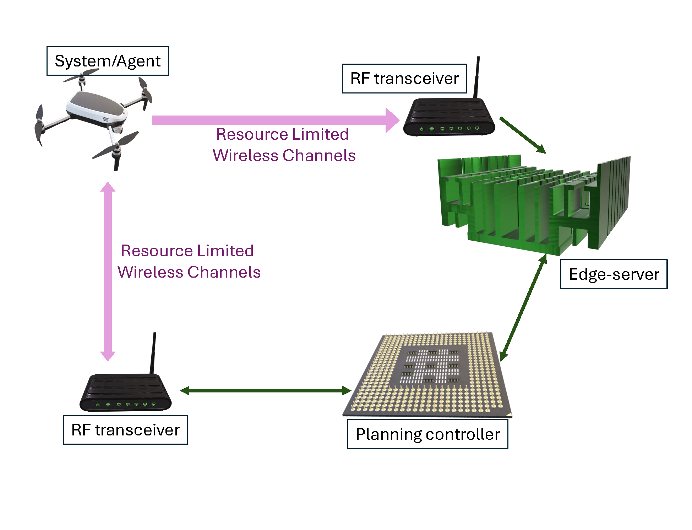

ACC 2025 Workshop: Collaborative Connections – Advances in Communication-Aware Learning, Planning, Control, and Games
|  | AbstractThe proposed workshop will showcase cutting edge of research on the effect of communication constraints on learning, control, and estimation in dynamical systems. Corruption and omission of data due to communication constraint, disruption, and delay, presents a daunting challenge for real-time learning and control of complex systems due to its uncertainty, environmental dependence, and hardware limitation. This workshop aims to offer a survey of emerging techniques and research problems related to communication-aware decision-making, spanning topics from networked multi-agent control and games to data-driven dynamics learning and coordinated decision-making for autonomous robots. Emphasis will be placed on both recent theoretical developments in communication-constraints on structured learning of dynamical systems and emerging applications ranging from aerial and underwater robotics, networked-control systems, and differential games. Several open problems and opportunities for further fruitful collaborative efforts in this growing field — at the intersection of systems and control theory, data science, communication, and machine learning — will be articulated and discussed. The following list provides broad areas of interest for technical content to be presented in the proposed workshop:
|
Organizers
Dipankar Maity |
 |
Debdipta Goswami |